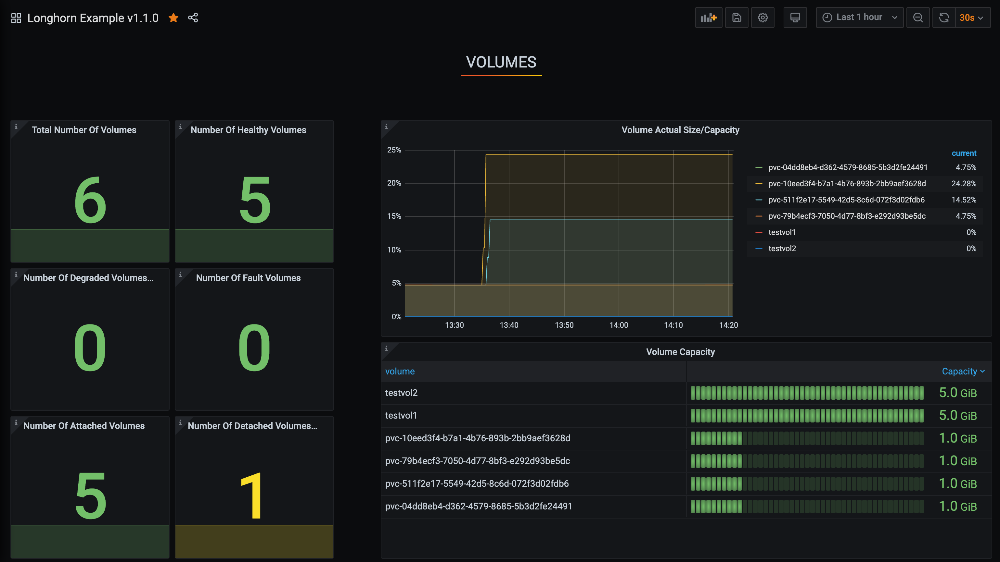

|
Dieses Dokument wurde mithilfe automatisierter maschineller Übersetzungstechnologie übersetzt. Wir bemühen uns um korrekte Übersetzungen, übernehmen jedoch keine Gewähr für die Vollständigkeit, Richtigkeit oder Zuverlässigkeit der übersetzten Inhalte. Im Falle von Abweichungen ist die englische Originalversion maßgebend und stellt den verbindlichen Text dar. |
|
Dies ist eine unveröffentlichte Dokumentation für SUSE® Storage 1.12 (Dev). |
Konfigurieren Sie Prometheus und Grafana zur Überwachung von SUSE® Storage
Longhorn stellt nativ Metriken im Prometheus-Textformat an einem REST-Endpunkt http://LONGHORN_MANAGER_IP:PORT/metrics zur Verfügung.
Sie können beliebige Erfassungstools wie Prometheus, Graphite, Telegraf verwenden, um diese Metriken abzurufen und die gesammelten Daten mit Tools wie Grafana zu visualisieren.
Siehe Longhorn-Metriken für die Überwachung für verfügbare Metriken.
Übersicht
Das Überwachungssystem verwendet Prometheus zur Datenerfassung und Alarmierung sowie Grafana zur Visualisierung/Dashboarding der gesammelten Daten.
-
Prometheus-Server, der Zeitreihendaten von den Longhorn-Metrik-Endpunkten abruft und speichert. Prometheus ist auch dafür verantwortlich, Alarme basierend auf konfigurierten Regeln und gesammelten Daten zu generieren. Prometheus-Server senden dann Alarme an einen Alertmanager.
-
AlertManager verwaltet dann diese Alarme, einschließlich Stummschaltung, Hemmung, Aggregation und dem Versenden von Benachrichtigungen über Methoden wie E-Mail, Bereitschaftsbenachrichtigungssysteme und Chat-Plattformen.
-
Grafana, das den Prometheus-Server nach Daten abfragt und ein Dashboard zur Visualisierung erstellt.
Das folgende Bild beschreibt die detaillierte Architektur des Überwachungssystems.

Es gibt 2 nicht erwähnte Komponenten im obigen Bild:
-
Der Longhorn-Backend-Dienst ist ein Dienst, der auf die Gruppe von Longhorn-Manager-Pods verweist. Die Metriken von Longhorn werden in den Longhorn-Manager-Pods am Endpunkt
http://LONGHORN_MANAGER_IP:PORT/metricsbereitgestellt. -
Prometheus-Operator macht das Ausführen von Prometheus auf Kubernetes sehr einfach. Der Operator überwacht 3 benutzerdefinierte Ressourcen: ServiceMonitor, Prometheus und AlertManager. Wenn Sie diese benutzerdefinierten Ressourcen erstellen, stellt der Prometheus-Operator den Prometheus-Server und den AlertManager mit den benutzerspezifischen Konfigurationen bereit und verwaltet sie.
Installation
Dieses Dokument verwendet den default Namespace für das Überwachungssystem. Um in einem anderen Namespace zu installieren, ändern Sie das Feld namespace: <OTHER_NAMESPACE> in den Manifesten.
Installieren Sie den Prometheus Operator
Befolgen Sie die Anweisungen in Prometheus Operator - Schnellstart.
HINWEIS: Sie müssen möglicherweise eine Version auswählen, die mit der Kubernetes-Version des Clusters kompatibel ist.
Installieren Sie den Longhorn ServiceMonitor
Installieren Sie den Longhorn ServiceMonitor mit Kubectl
Erstellen Sie einen ServiceMonitor für den Longhorn Manager.
apiVersion: monitoring.coreos.com/v1
kind: ServiceMonitor
metadata:
name: longhorn-prometheus-servicemonitor
namespace: default
labels:
name: longhorn-prometheus-servicemonitor
spec:
selector:
matchLabels:
app: longhorn-manager
namespaceSelector:
matchNames:
- longhorn-system
endpoints:
- port: managerInstallieren Sie den Longhorn ServiceMonitor mit Helm
-
Ändern Sie die YAML-Datei
longhorn/chart/values.yaml.metrics: serviceMonitor: # -- Setting that allows the creation of a [Prometheus Operator](https://prometheus-operator.dev/) ServiceMonitor resource for Longhorn Manager components. enabled: true -
Erstellen Sie einen ServiceMonitor für den Longhorn Manager mit Helm.
helm upgrade longhorn longhorn/longhorn --namespace longhorn-system -f values.yaml
Der Longhorn ServiceMonitor ist eine Prometheus Operator benutzerdefinierte Ressource. Dieses Setup ermöglicht es dem Prometheus-Server, alle Longhorn Manager-Pods und deren jeweilige Endpunkte zu entdecken.
Sie können den Label-Selector app: longhorn-manager verwenden, um den longhorn-backend Dienst auszuwählen, der auf die Gruppe von Longhorn Manager-Pods verweist.
Installieren und konfigurieren Sie den Prometheus AlertManager
-
Erstellen Sie ein hochverfügbares Alertmanager-Deployment mit 3 Instanzen.
apiVersion: monitoring.coreos.com/v1 kind: Alertmanager metadata: name: longhorn namespace: default spec: replicas: 3 -
Die Alertmanager-Instanzen starten nicht, es sei denn, eine gültige Konfiguration wird bereitgestellt. Siehe Prometheus - Konfiguration für weitere Erklärungen.
global: resolve_timeout: 5m route: group_by: [alertname] receiver: email_and_slack receivers: - name: email_and_slack email_configs: - to: <the email address to send notifications to> from: <the sender address> smarthost: <the SMTP host through which emails are sent> # SMTP authentication information. auth_username: <the username> auth_identity: <the identity> auth_password: <the password> headers: subject: 'Longhorn-Alert' text: |- {{ range .Alerts }} *Alert:* {{ .Annotations.summary }} - `{{ .Labels.severity }}` *Description:* {{ .Annotations.description }} *Details:* {{ range .Labels.SortedPairs }} • *{{ .Name }}:* `{{ .Value }}` {{ end }} {{ end }} slack_configs: - api_url: <the Slack webhook URL> channel: <the channel or user to send notifications to> text: |- {{ range .Alerts }} *Alert:* {{ .Annotations.summary }} - `{{ .Labels.severity }}` *Description:* {{ .Annotations.description }} *Details:* {{ range .Labels.SortedPairs }} • *{{ .Name }}:* `{{ .Value }}` {{ end }} {{ end }}Speichern Sie die obige Alertmanager-Konfiguration in einer Datei mit dem Namen
alertmanager.yamlund erstellen Sie ein Secret daraus mit kubectl.Alertmanager-Instanzen erfordern, dass die Benennung der Secret-Ressourcen dem Format
alertmanager-<ALERTMANAGER_NAME>folgt. Im vorherigen Schritt ist der Name des Alertmanagerslonghorn, daher muss der Secret-Namealertmanager-longhornsein.$ kubectl create secret generic alertmanager-longhorn --from-file=alertmanager.yaml -n default -
Um die Web-UI des Alertmanagers anzeigen zu können, machen Sie sie über einen Service zugänglich. Eine einfache Möglichkeit, dies zu tun, besteht darin, einen Service vom Typ NodePort zu verwenden.
apiVersion: v1 kind: Service metadata: name: alertmanager-longhorn namespace: default spec: type: NodePort ports: - name: web nodePort: 30903 port: 9093 protocol: TCP targetPort: web selector: alertmanager: longhornNachdem Sie den oben genannten Service erstellt haben, können Sie die Web-UI des Alertmanagers über die IP eines Knotens und den Port 30903 aufrufen.
Verwenden Sie den oben genannten
NodePortService nur zur schnellen Überprüfung, da er nicht über die TLS-Verbindung kommuniziert. Sie möchten möglicherweise den Servicetyp inClusterIPändern und einen Ingress-Controller einrichten, um die Web-UI des Alertmanagers über eine TLS-Verbindung zugänglich zu machen.
Installieren und konfigurieren Sie den Prometheus-Server.
-
Erstellen Sie eine benutzerdefinierte Ressource PrometheusRule, um Alarmbedingungen zu definieren. Siehe weitere Beispiele zu Longhorn-Alarmregeln unter Longhorn-Alarmregel-Beispiele.
apiVersion: monitoring.coreos.com/v1 kind: PrometheusRule metadata: labels: prometheus: longhorn role: alert-rules name: prometheus-longhorn-rules namespace: default spec: groups: - name: longhorn.rules rules: - alert: LonghornVolumeUsageCritical annotations: description: Longhorn volume {{$labels.volume}} on {{$labels.node}} is at {{$value}}% used for more than 5 minutes. summary: Longhorn volume capacity is over 90% used. expr: 100 * (longhorn_volume_usage_bytes / longhorn_volume_capacity_bytes) > 90 for: 5m labels: issue: Longhorn volume {{$labels.volume}} usage on {{$labels.node}} is critical. severity: criticalSiehe Prometheus - Alarmregeln für weitere Informationen.
-
Wenn RBAC Autorisierung aktiviert ist, erstellen Sie eine ClusterRole und ClusterRoleBinding für die Prometheus-Pods.
apiVersion: v1 kind: ServiceAccount metadata: name: prometheus namespace: defaultapiVersion: rbac.authorization.k8s.io/v1 kind: ClusterRole metadata: name: prometheus namespace: default rules: - apiGroups: [""] resources: - nodes - services - endpoints - pods verbs: ["get", "list", "watch"] - apiGroups: [""] resources: - configmaps verbs: ["get"] - nonResourceURLs: ["/metrics"] verbs: ["get"]apiVersion: rbac.authorization.k8s.io/v1 kind: ClusterRoleBinding metadata: name: prometheus roleRef: apiGroup: rbac.authorization.k8s.io kind: ClusterRole name: prometheus subjects: - kind: ServiceAccount name: prometheus namespace: default -
Erstellen Sie eine benutzerdefinierte Ressource für Prometheus. Beachten Sie, dass wir den Longhorn ServiceMonitor und die Longhorn-Regeln im Spec auswählen.
apiVersion: monitoring.coreos.com/v1 kind: Prometheus metadata: name: longhorn namespace: default spec: replicas: 2 serviceAccountName: prometheus alerting: alertmanagers: - namespace: default name: alertmanager-longhorn port: web serviceMonitorSelector: matchLabels: name: longhorn-prometheus-servicemonitor ruleSelector: matchLabels: prometheus: longhorn role: alert-rules -
Um die Web-UI des Prometheus-Servers anzeigen zu können, machen Sie sie über einen Service zugänglich. Eine einfache Möglichkeit, dies zu tun, besteht darin, einen Service vom Typ NodePort zu verwenden.
apiVersion: v1 kind: Service metadata: name: prometheus-longhorn namespace: default spec: type: NodePort ports: - name: web nodePort: 30904 port: 9090 protocol: TCP targetPort: web selector: prometheus: longhornNachdem Sie den oben genannten Service erstellt haben, können Sie die Web-UI des Prometheus-Servers über die IP eines Knotens und den Port 30904 aufrufen.
An diesem Punkt sollten Sie in der Lage sein, alle Longhorn Manager-Ziele sowie die Longhorn-Regeln im Abschnitt Ziele und Regeln der Prometheus-Server-UI zu sehen.
Verwenden Sie den oben genannten NodePort-Service nur zur schnellen Überprüfung, da er nicht über die TLS-Verbindung kommuniziert. Sie möchten möglicherweise den Servicetyp in
ClusterIPändern und einen Ingress-Controller einrichten, um die Web-UI des Prometheus-Servers über eine TLS-Verbindung zugänglich zu machen.
Grafana einrichten
-
Erstellen Sie eine ConfigMap für die Grafana-Datasource.
apiVersion: v1 kind: ConfigMap metadata: name: grafana-datasources namespace: default data: prometheus.yaml: |- { "apiVersion": 1, "datasources": [ { "access":"proxy", "editable": true, "name": "prometheus-longhorn", "orgId": 1, "type": "prometheus", "url": "http://prometheus-longhorn.default.svc:9090", "version": 1 } ] }HINWEIS: Ändern Sie das Feld
url, wenn Sie den Monitoring-Stack in einem anderen Namespace installieren.
+http://prometheus-longhorn.<NAMESPACE>.svc:9090" -
Erstellen Sie die Grafana-Implementierung.
apiVersion: apps/v1 kind: Deployment metadata: name: grafana namespace: default labels: app: grafana spec: replicas: 1 selector: matchLabels: app: grafana template: metadata: name: grafana labels: app: grafana spec: containers: - name: grafana image: grafana/grafana:7.1.5 ports: - name: grafana containerPort: 3000 resources: limits: memory: "500Mi" cpu: "300m" requests: memory: "500Mi" cpu: "200m" volumeMounts: - mountPath: /var/lib/grafana name: grafana-storage - mountPath: /etc/grafana/provisioning/datasources name: grafana-datasources readOnly: false volumes: - name: grafana-storage emptyDir: {} - name: grafana-datasources configMap: defaultMode: 420 name: grafana-datasources -
Erstellen Sie den Grafana-Service.
apiVersion: v1 kind: Service metadata: name: grafana namespace: default spec: selector: app: grafana type: ClusterIP ports: - port: 3000 targetPort: 3000 -
Stellen Sie Grafana über NodePort
32000bereit.kubectl -n default patch svc grafana --type='json' -p '[{"op":"replace","path":"/spec/type","value":"NodePort"},{"op":"replace","path":"/spec/ports/0/nodePort","value":32000}]'Verwenden Sie den oben genannten NodePort-Service nur zur schnellen Überprüfung, da er nicht über die TLS-Verbindung kommuniziert. Sie möchten möglicherweise den Servicetyp auf ClusterIP ändern und einen Ingress-Controller einrichten, um Grafana über eine TLS-Verbindung bereitzustellen.
-
Greifen Sie auf das Grafana-Dashboard über eine beliebige Knoten-IP an Port
32000zu.# Default Credential User: admin Pass: admin -
Longhorn-Dashboard einrichten.
Sobald Sie in Grafana sind, importieren Sie das vorgefertigte Longhorn-Beispiel-Dashboard.
Siehe Grafana Lab - Export und Import für Anweisungen zum Importieren eines Grafana-Dashboards.
Sie sollten das folgende Dashboard bei erfolgreicher Einrichtung sehen:
